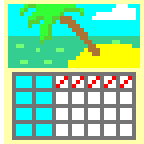

Week Pattern
🗓
Week Pattern
Calculating...
see what's been going on with your bgls lately
include weekends?
yes
no
choose time range to go back:
7 days
30 days
3 months
1 year
days
->
show chart data?
yes
no
how charts work
each timezone has 1 bgl value
multiple bgls in 1 timezone will be averaged
if bgl doesn't exist for a timezone, it gets estimated
(linear interpolation)
thresholds to flag more/fewer lows/highs can be adjusted in Settings
most common patterns data
pattern
count
time in range data
level
hours/day
median bgl step data
date
timezone
bgl
step
most common patterns
no data available yet to view
time in range
no data available yet to view
median bgl step
no data available yet to view